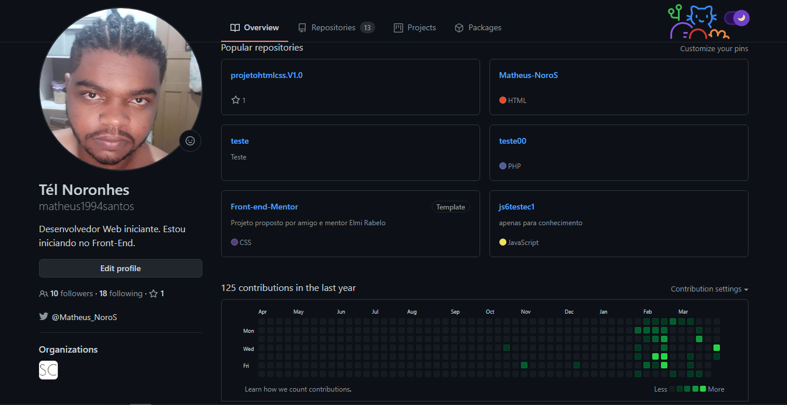

Projetos no GitHub
São projetos com layout e desejos pessoais que acabaram ficando alguns inacabados devido
a vontande estudar e aprender novas coisas
Este é meu perfil atual no github.
No meu perfil do GitHub coloco todas as minhas ideias e experimento. Expresso meu design, aprendizados e ideias.
Tento manter sempre alientado para mostrar meus desenvolvimentos e aprendizados, mostrando para mim e que quiser visitar
este perfil como anda minha evolução nas linguagens web.
No momento estou buscando ter um conhecimento cada vez maior em Javascript para que eu posso entrar de cabeça no aprendizados
do React e Redux.